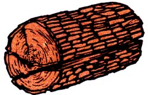
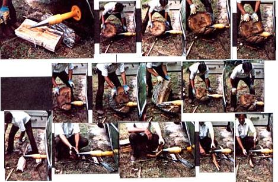
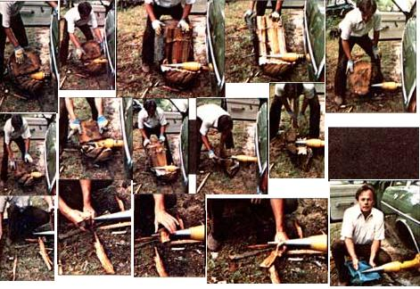

Ever so often, a new product comes down the pike that is so good and so reasonable in price and so sturdily made and so right for the job that it's designed to do, that you just gotta tell people about it.
Such a product is the Stickler log splitter, manufactured and marketed by Taos Equipment Manufacturers, Inc., Box 1565, Taos, N.M. 87571. This is the good one, gang ... so good that we wouldn't be surprised to see it put almost every other log splitter on the market out of the market. And soon.
As a matter of fact, the Stickler has already done just that to the full line of hydraulic splitters; that Taos (itself) used to make. Because, just like all the other manufacturers in the field who made a quality hydraulic splitter that could handle logs of any size at all with any kind of speed, Taos was forced (by the cost of the components that went into its units) to price its line at $1,375 and up. And that "up" - for Taos and most other firms that produced hydraulic splitters - could go clear into the stratosphere.
Imagine the surprise, then, of both David Kimball and Larry Krogness (sales and marketing managers, respectively, of TEM, Inc.) a few months ago, when they found that they could manufacture and sell a $235 splitter that would cleave bigger logs faster and more surely, in most cases, than even their $2,375 hydraulic machine could handle.
"Holy moly!" the two young (early 30's) entrepreneurs exclaimed. "This is gonna revolutionize the log splitting business. We'd better get this thing on the market before someone else beats us to it."
And so, within weeks (which is to say early this year), they did put the Stickler on the market ... and, by mid-summer, they'd already seen the little dickens dang near completely kill all demand for (sob!) their more expensive hydraulic splitters.
But, being Gentlemen Of The Old School ("make a better product at a lower price . . . and then cut that price"), David and Larry never even looked back at the big-bucks business the Stickler had just done 'em out of. Instead, they forged ahead, found new and better ways of producing the Stickler ... and then cut its price from $235 down to $199!
"Well," we thought. "That's right nice of the boys out there in New Mexico. But everyone knows that the Southwest is so dry that the trees which grow in that part of the country ain't hardly trees at all. Back here in the Smoky Mountains, on the other hand, our trees are TREES. Why, even the limbs which fell off that oak during last winter's ice storm were better than two feet thick. Betcha that little Stickler whatchamacallit won't split something like that!"
So, a few weeks ago, David made it a point to fly over to our neck of the woods, rent a car, and drive right up to those oak limbs we'd been bragging about. And be-darned if he didn't chock both front wheels of that rented car, jack up its rear end, remove the left behind wheel, and bolt one of his Sticklers on in its place.
Then he let that rear axle down on a good, solid chunk of wood so that the Stickler was about 12 inches above the ground. And he magnetically clamped a safety switch to the side of the car (where he could reach it easy just in case he had to) and he ran a long wire from the switch up under the hood and clipped it to the negative side of the car's coil. Then he started the vehicle's engine and laid another small chunk of wood on its accelerator so that the powerplant would tick over at a moderately fast idle.
And then did young Mr. Kimball ever split wood! He started in with the biggest round we had and-less than eight seconds later-had already split a hefty wedge off its side. So he nonchalantly rotated the main body of the round about 90 degrees, pushed it up against the Stickler's point again and - in about seven seconds flat - split off another wedge.
Well sir. He kept that up until he had the core of that piece of firewood split down to toothpick size. And then he did the same thing to another chunk of oak and another one after that and so on until, about 10 minutes later, he had a stack of split wood next to him taller than he was. At that point he generously let us try it (and there was nothing to splittin' out logs just as good as David had done) and then he ran his hands and his gloves and his jacket all around the Stickler's point to show us that it was a clanged sight more difficult to get into trouble with the machine than most folks might suppose.
"I don't recommend that anyone else ever fool around this way," David warned as he repeated the last part of his demonstration, "because anything that can split wood the way the Stickler does should be treated with a great deal of respect. Still, you can see that you'd really have to be a maladroit to get yourself hurt on this thing. We think it's the safest log splitter on the market."
And we had to agree. The Stickler looks to us to be the safest, the fastest, the lowest cost, the least expensive to operate (one gallon of gas burned per cord of wood split), the most troublefree (there's hardly anything to go wrong) . . . in short, the BEST log splitter you can purchase anywhere. We bought ours on the spot after David's demonstration and we wouldn't sell it for a thousand dollars if we knew we couldn't get another.
And that's all we've got to say on the subject. Except that anyone else who intends to burn wood this winter is well advised to get his or her order for a Stickler in early. Because once "they" find out how good this thing is, we just know that Taos is gonna have one devil of a time keeping up with demand.
|
 |
 |
 |